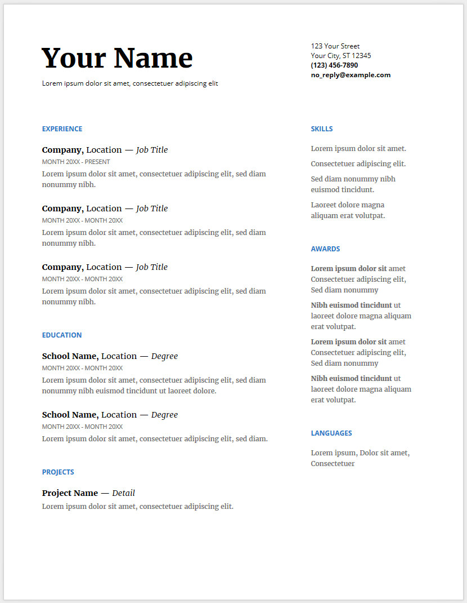

Internship
Internship
It's a decent way to get some experience. Downside is you won't be paid in full and you probably already did some internships during school as well, but for some reason they dont often count for actual experience since its part of the school program.

Resume
Resume
It is important to have a clear resume. Google has some templates on resume lay-out. For IT however, it may be nice to not only include education and experience, but also some way to show your proficiency in the tools you use.